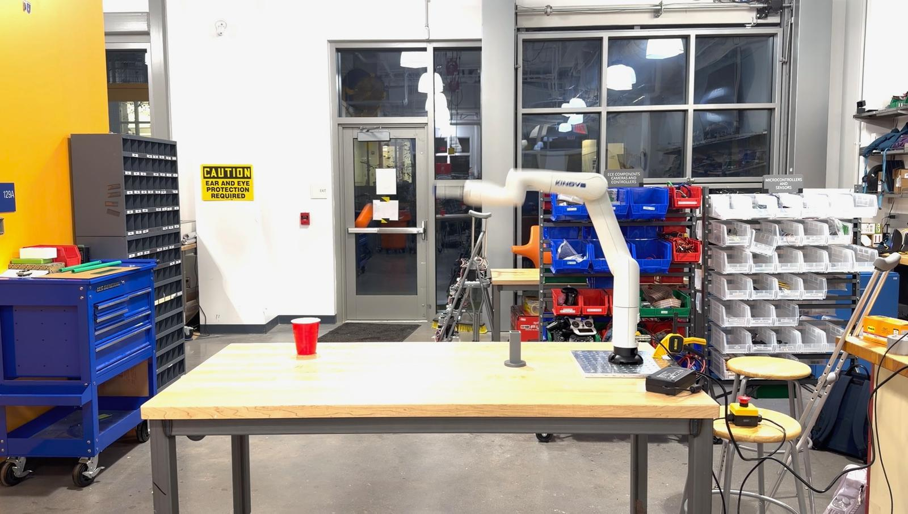
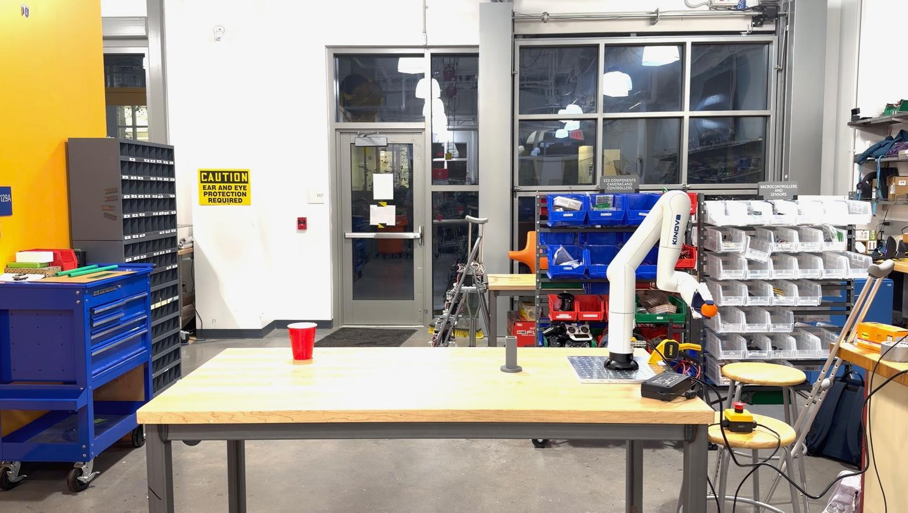
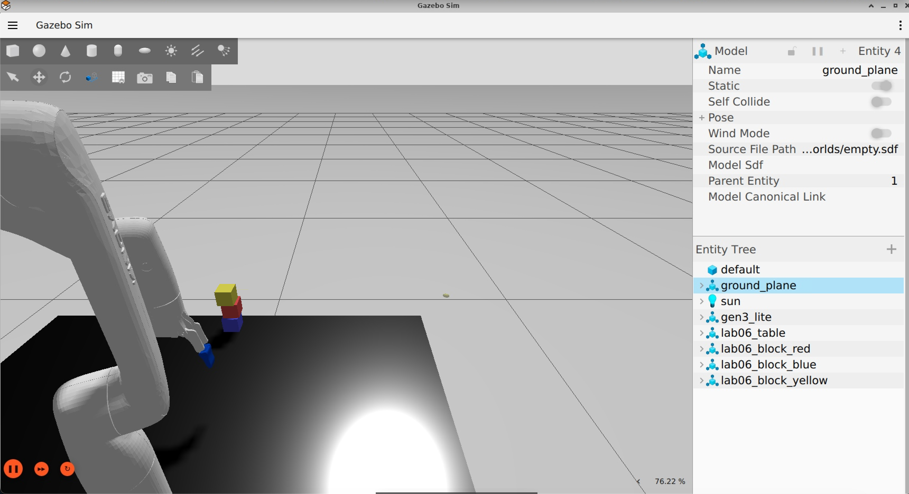
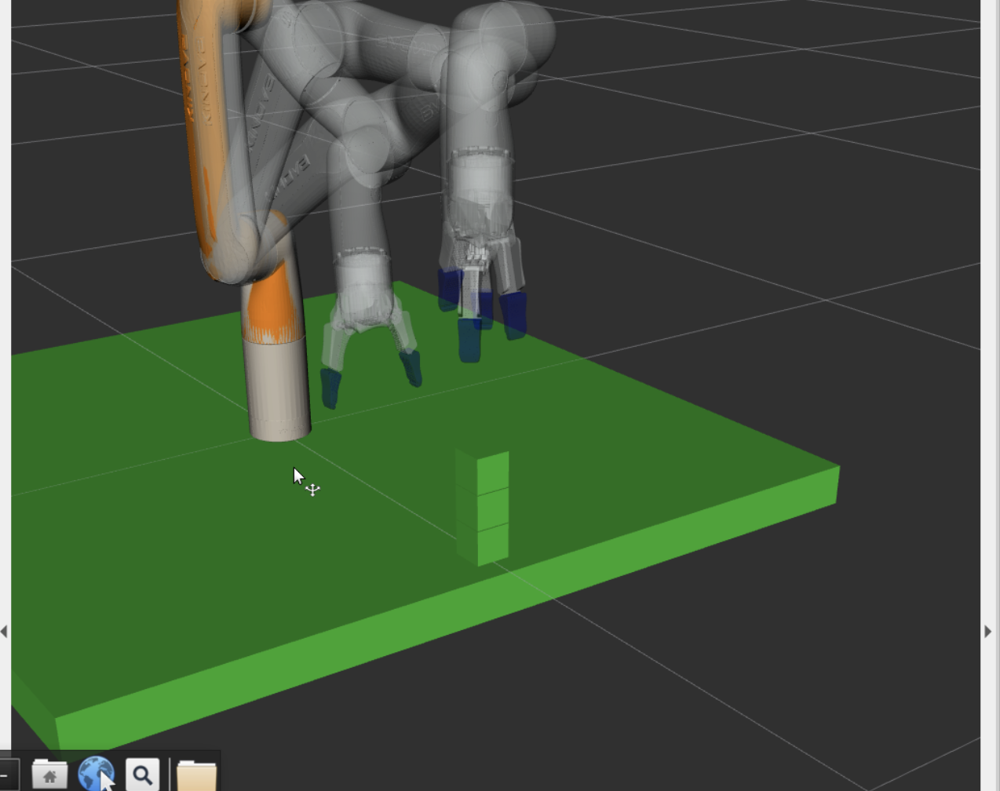

Kinova Gen3 Lite manipulation suite
Physical demonstration, with related simulation and implementation prototypes
- Outcome
- Built a ROS 2 manipulation suite spanning a physical throwing demo plus related pick-and-place and writing prototypes in simulation.
- My role
- Created the package nodes, MoveIt 2 commands, gripper control, collision scenes, and joint-limit configuration.
- Proof
- Physical demo video plus Gazebo and RViz captures and repositories. The throwing path uses joint-state-triggered gripper release and open-loop targeting; no repeatability or hit-rate is claimed.
Technologies
- ROS 2
- MoveIt 2
- C++
- Kortex
- RViz
- Gazebo